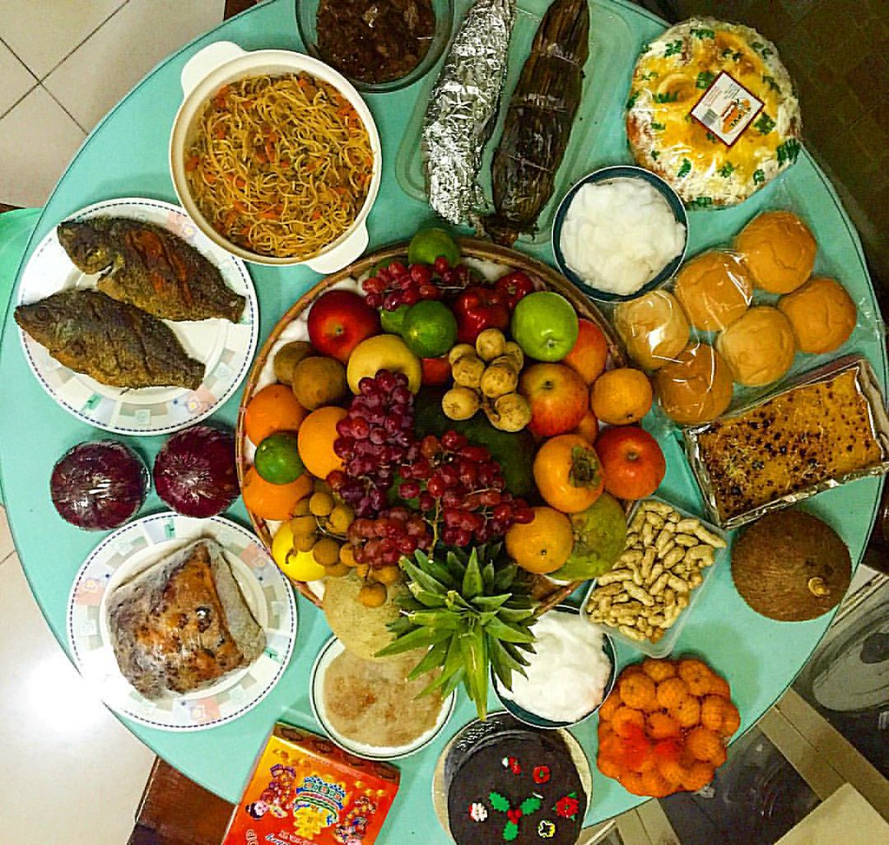

Date: January 1, 2025
What do people do?
Many Filipinos come together on New Year’s Eve, which falls on December 31, to celebrate with a midnight meal known as Media Noche.
It is also common for people to stay awake to welcome the New Year.
On New Year’s Day, Filipinos celebrate by lighting fireworks and making a lot of noise to drive away evil spirits, a tradition that originated from Chinese culture.
The elderly often encourage children to jump at the stroke of midnight, believing it will help them grow tall.
Many people display 12 circular fruits and wear clothing with polka dots to symbolize wealth.
Additionally, it is popular to open all doors and windows at midnight to let in good luck.
Many Filipino families also read the Christian Bible and attend a church service at midnight.
It is common for Filipinos to blend religious practices with superstitions while celebrating the New Year.
Public Life
New Year’s Day is a public holiday in the Philippines on January 1.
Government offices, schools, and most businesses are closed.
Public transport is limited, with reduced bus and jeep services operating on New Year’s Day.

Background
New Year’s Day is a public holiday in the Philippines.
It marks the start of the New Year in the Gregorian calendar.
The celebration of New Year’s Day in the Philippines is based on the Gregorian calendar, which was introduced by the Spaniards during the colonial period.
The New Year’s Eve and New Year’s Day celebrations in the Philippines begin on December 31 and continue into January 1.
New Year’s Day is a brief yet uniquely celebrated holiday throughout the country.
It is a time when many Filipino families gather to strengthen their family ties.
This joyful occasion is marked by a blend of religious and pagan traditions, reflecting the influences of the former Hispanic society in the Philippines.
Symbols
The following are common symbols associated with New Year’s Day in the Philippines:
References/Sources